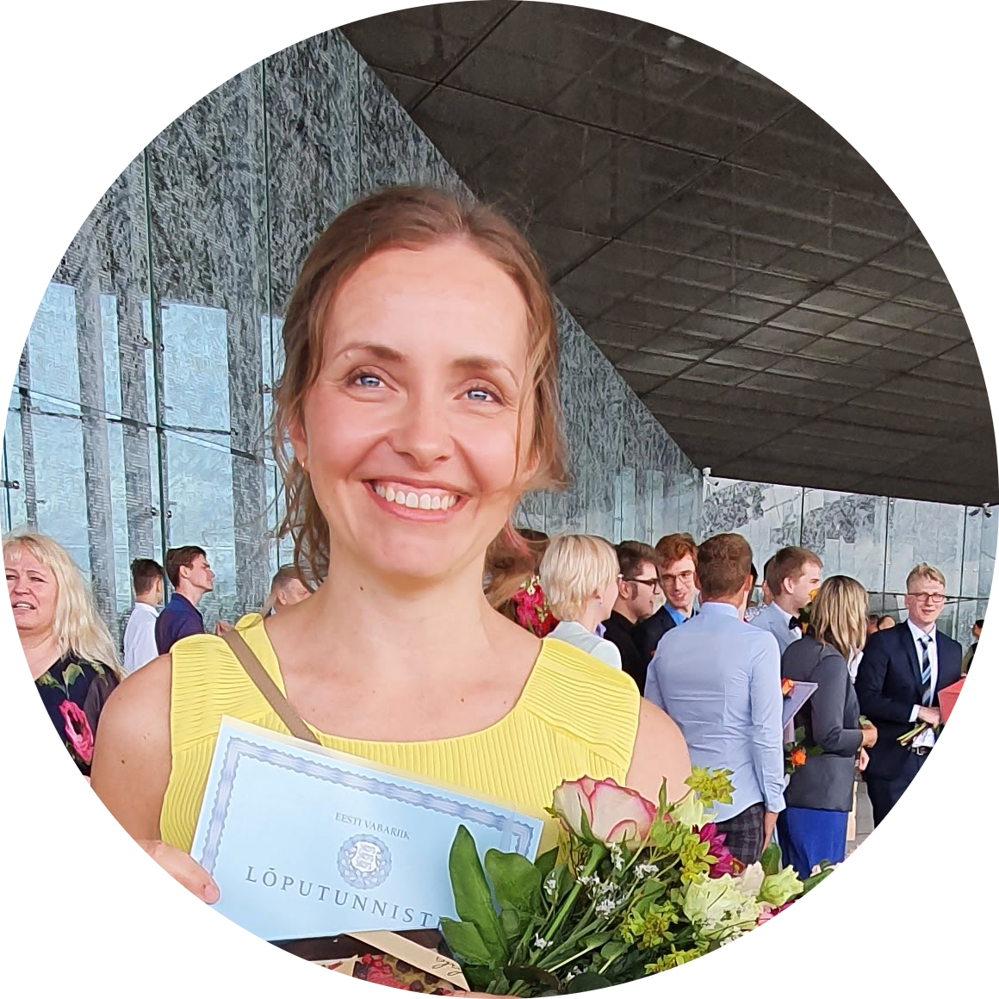

|  | Mairi SaarWeb development apprentice I'm learning web development on Udemy. |
| Date | Work |
|---|---|
| 2019 - 2022 | University of Tartu, Senior Specialist of Study Information System Helpdesk |
| 2013 - 2018 | University of Tartu, Specialist of Study Information System Helpdesk |
| 2008 - 2013 | Ilmatsalu Kindergarten Lepatriinu, Teacher of Primary Education |
|
|